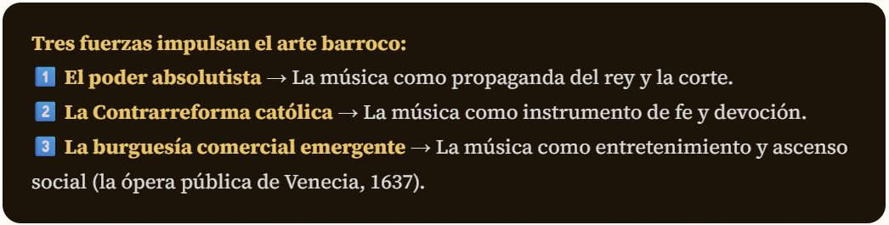
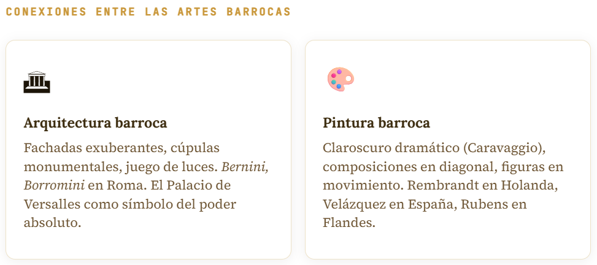
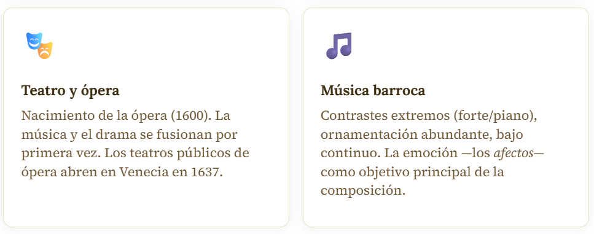
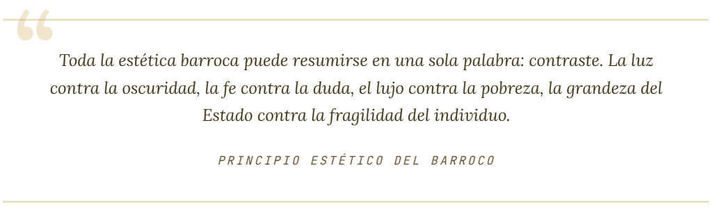
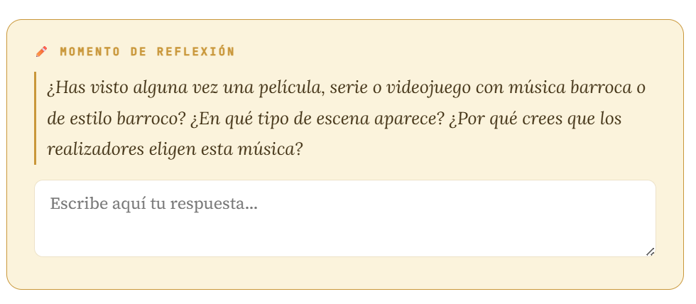
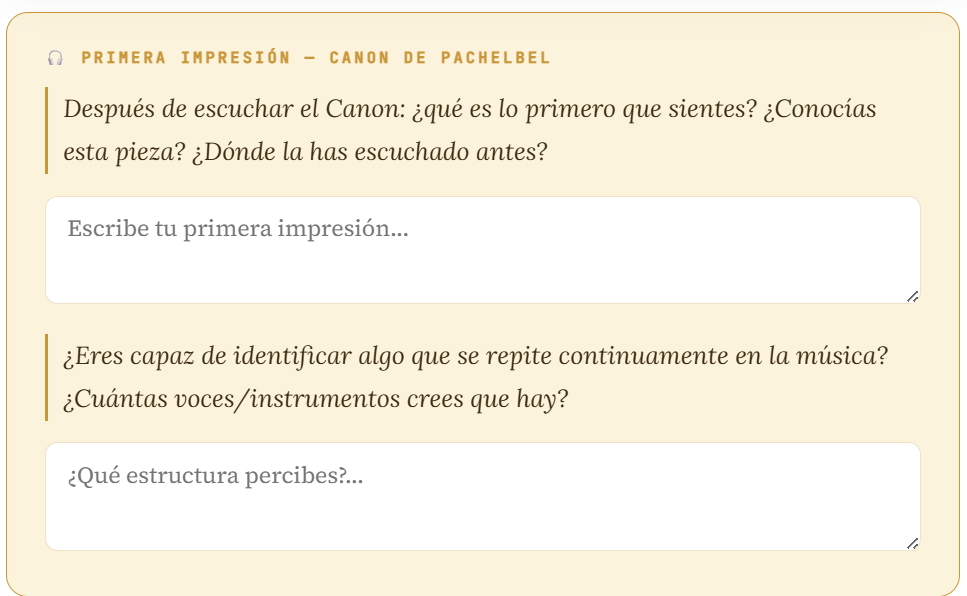

ACTIVIDAD 1.1. Quiz de conocimientos previos
- Duración
- 15 minutos
- Agrupamiento
- Individual
Antes de empezar cualquier viaje, es bueno saber desde dónde partimos. Esta actividad no tiene calificación: es una foto de partida del grupo. Responde con honestidad, sin buscar en internet ni mirar al compañero o compañera. Lo que no sepas hoy, lo sabrás al terminar la Fase 1.
Selecciona
Elige las respuestas correctas y haz clic en el botón para comprobarlas.
Actividad 1.2. Reflexiona
- Duración
- 25 minutos
- Agrupamiento
- Pequeños grupos
La música del Barroco no puede entenderse de forma aislada. Es parte de un movimiento artístico total que transformó la pintura, la arquitectura, la escultura, el teatro y la danza. En esta actividad, el/la docente presentará los grandes ejes del Barroco y tú participarás activamente compartiendo lo que ya conoces.
El contexto histórico: absolutismo, fe y grandeza
Para entender la música barroca, es imprescindible conocer el mundo en el que nació. El siglo XVII fue una época de profundas contradicciones: guerras devastadoras (la Guerra de los Treinta Años, 1618-1648), epidemias, y al mismo tiempo un florecimiento extraordinario de las artes, las ciencias y el pensamiento.
El absolutismo monárquico y la música
Los grandes reyes absolutos de la época —Luis XIV en Francia, Carlos II en España, los emperadores del Sacro Imperio Romano— utilizaron el arte y la música como instrumentos de poder y propaganda. Una corte sin música, sin ballet, sin ópera, era una corte sin prestigio.
El ejemplo más extremo es Luis XIV de Francia. El "Rey Sol" bailaba personalmente en los ballets de corte, encargó a Jean-Baptiste Lully la creación de la ópera francesa, y construyó el Palacio de Versalles como escenario permanente de un espectáculo de poder. La grandeza del rey se medía también en el tamaño de su orquesta.
La Contrarreforma y la música religiosa
En el mundo católico, el Concilio de Trento (1545-1563) había marcado el inicio de la Contrarreforma. La Iglesia comprendió que el arte y la música podían ser instrumentos poderosos de persuasión: las iglesias se convirtieron en verdaderos teatros sagrados, con pinturas que contaban historias bíblicas, esculturas que representaban el éxtasis místico, y música que emocionaba y conmovía al fiel hasta las lágrimas.

Cronología esencial del Barroco musical
| Año | Acontecimiento | Relevancia |
| 1600 | Jacopo Peri estrena Euridice en Florencia | Primera ópera de la historia |
| 1607 | Claudio Monteverdi estrena L'Orfeo | Primera gran ópera dramática |
| 1619 | Nace Barbara Strozzi en Venecia | La compositora más prolífica de su siglo |
| 1637 | Primer teatro de ópera público, San Cassiano, Venecia | La ópera se convierte en entretenimiento para todos |
| 1678 | Nace Antonio Vivaldi | El violinista y compositor más influyente del Barroco tardío |
| 1685 | Nacen Bach, Händel y D. Scarlatti | El año más extraordinario del Barroco |
| 1694 | Jacquet de la Guerre estrena Céphale et Procris | Primera ópera francesa de una mujer |
| 1717 | Händel compone la Música acuática | Encargo del rey Jorge I de Gran Bretaña |
| 1722 | Bach publica El clave bien temperado, vol. I | Fundamento del sistema tonal occidental |
| 1723 | Vivaldi publica Las Cuatro Estaciones | Primer gran ejemplo de música programática |
| 1741 | Händel compone El Mesías en 24 días | El oratorio más famoso de la historia |
| 1750 | Muere J. S. Bach en Leipzig | Fin del período barroco |


Fíjate en este paralelismo fundamental: en pintura, el claroscuro de Caravaggio juega con la luz y la oscuridad de forma dramática. En música barroca, ese mismo contraste extremo se traduce en los cambios bruscos de dinámica —de muy fuerte a muy suave— y en la alternancia entre secciones de gran densidad sonora y momentos de delicada intimidad.


Actividad 1.3. Canon de Pachelbel
- Duración
- 00:10
- Agrupamiento
Vamos a terminar esta primera sesión escuchando la pieza que interpretarás a tres voces al final de esta Situación de Aprendizaje: el Canon en Re mayor de Johann Pachelbel. Escúchala con atención y sin más información previa: ¿qué escuchas? ¿qué sientes? ¿qué estructura percibes?
